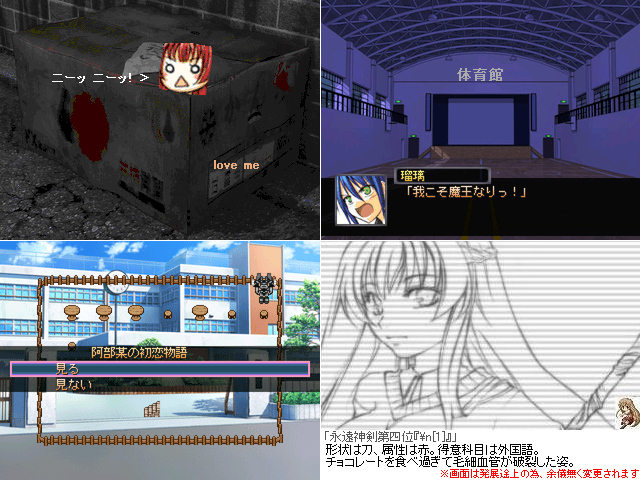

No.04-続・もしも色々な仮想世界の魔法が使えたら（仮） 試験版
No.04-続・もしも色々な仮想世界の魔法が使えたら（仮） 試験版

■続・もしも色々な仮想世界の魔法が使えたら（仮） 試験版 エル
紹介文
本作品は「既存のあらゆるゲームの魔法やら何やらが使えたらどうなるか」 という夢一杯なコンセプトの元で開発された、所謂実験作品・・・・の続きです クソゲーだと思われていた代物が予想の斜め上に評価されてしまっていたので、 感謝の気持ちをアイテムクリエイションして続編を作る事にしました というかもう大体出来てるんですが、如何せんネタが不足気味なので、 ここはいっちょツクラーの皆に意見を募ろうかと言う事で、 今回体験版を提出する事になりました。タイトルもどうしようね、まだ決めてないよ なお前作をプレイ済みでないと訳判らん内容になっているのでご注意下さい またこのゲームによって発生した如何なる不可思議な出来事にも、 くそげ量産機ことエルは全く関与致しかねますので予めご了承下さい 因みにｓｓの右下の絵は勝手にぱくってきました。問題があれば削除変更します 詳しくはメモ帳をどうぞ。というか必ず見てね☆ なお本作品は管理人の最終更新と同時に削除される予定です。ご了承下さい 製品概要： ソフト・・・・・・・・・ネタ塗れにしたいゲーム プレイ時間・・・・・一時間半もないかな？ セーブ・・・・・・・・可 戦闘・・・・・・・・・無 製品版互換性・・変数を弄る為不明、可能にする予定ではありまする ルート分岐・・・・無 ゴメス・・・・・・・・無 弱王・・・・・・・・・歩くよ！ 水がなければ・・希望も無い その他・・・・・・・お気軽にご相談下さい
管理人から一言: 予告ゲーで閣下のテンションに吹いた。
© VIPRPG